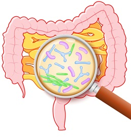

Salud y Bienestar
Salud Digestiva.
¿Qué es la Salud Digestiva?
La salud digestiva se refiere al bienestar del sistema digestivo en su totalidad.
Esto incluye un funcionamiento adecuado del sistema, un tránsito intestinal óptimo y una microbiota equilibrada.
Mantener una buena salud digestiva es fundamental para el bienestar general, ya que su desequilibrio puede provocar enfermedades digestivas y afectar otras áreas del cuerpo.
Para cuidar la salud digestiva, es importante consumir alimentos que favorezcan el crecimiento de bacterias benéficas, como incluir fibra prebiótica en la dieta. Además, diversos factores pueden afectar su funcionamiento óptimo, como la alimentación y el estilo de vida.
Impacto de la Microbiota Indestinal en la Salud
La microbiota intestinal, también conocida como microbioma intestinal, es una comunidad diversa de microorganismos que habitan en el tracto gastrointestinal humano.
Esta comunidad microbiana, compuesta principalmente por bacterias, pero también por hongos, virus y otros microorganismos, desempeña un papel esencial en una variedad de funciones fisiológicas y metabólicas del cuerpo humano.

Toca la imagen para conocer mas de esta microbiota
Probioticos y Prebioticos
Los probióticos son microorganismos vivos que, cuando se consumen en cantidades adecuadas, pueden aportar beneficios a la salud, especialmente al sistema digestivo.
Se encuentran en alimentos fermentados como el yogur, el kéfir y el chucrut.
Por otro lado, los prebióticos son sustancias que sirven de alimento para las bacterias beneficiosas del intestino, favoreciendo su crecimiento y actividad.
Son fibras no digeribles presentes en alimentos como los granos integrales, las bananas, las cebollas y el ajo.
Ambos trabajan en conjunto para mantener un equilibrio saludable en la microbiota intestinal, lo que puede influir en la digestión, el sistema inmunológico y hasta el bienestar mental
Probioticos y Prebioticos
Relacion entre la Digestion y Salud Mental
La digestión y la salud mental están profundamente conectadas a través del eje intestino-cerebro, una vía bidireccional de comunicación entre el sistema nervioso y el tracto digestivo.
El intestino alberga millones de neuronas y microorganismos que influyen en la producción de neurotransmisores como la serotonina, fundamental para el bienestar emocional.
Factores como el estrés y la ansiedad pueden alterar la microbiota intestinal, afectando la digestión y favoreciendo trastornos como el síndrome del intestino irritable.
A su vez, una alimentación deficiente puede contribuir a la inflamación y desequilibrar neurotransmisores clave, afectando el estado de ánimo y la capacidad cognitiva.
Hábitos como una dieta equilibrada, el ejercicio y la gestión del estrés son fundamentales para fortalecer esta conexión y promover una salud mental estable.
En resumen, lo que comemos y cómo digerimos los alimentos influye directamente en nuestro estado emocional y mental. Cuidar la digestión es también cuidar la mente.
Alimentacion Personalizada
La alimentación personalizada es un enfoque nutricional adaptado a las necesidades individuales de cada persona, considerando factores como edad, genética, estilo de vida, estado de salud y objetivos específicos.
A diferencia de una dieta generalizada, este modelo reconoce que cada organismo tiene requerimientos distintos para optimizar su funcionamiento.
Se basa en la evaluación de intolerancias alimentarias, condiciones metabólicas y preferencias personales, permitiendo un plan nutricional que favorezca el bienestar y la prevención de enfermedades.
Además, la alimentación personalizada considera la microbiota intestinal, clave en la digestión y la salud general.
Estudios demuestran que los hábitos alimenticios tienen un impacto directo en el equilibrio hormonal, la energía y la capacidad cognitiva. Incorporar este enfoque puede mejorar la relación con los alimentos, evitar deficiencias nutricionales y potenciar el rendimiento físico y mental.
La tecnología y la ciencia han facilitado su aplicación mediante análisis genéticos y nutricionales más precisos.
En definitiva, la personalización nutricional no es solo una tendencia, sino una herramienta efectiva para vivir de manera más saludable.
Cuida tu salud digestiva.
Subir Regresar a pagina anterior Regresar a pagina principal